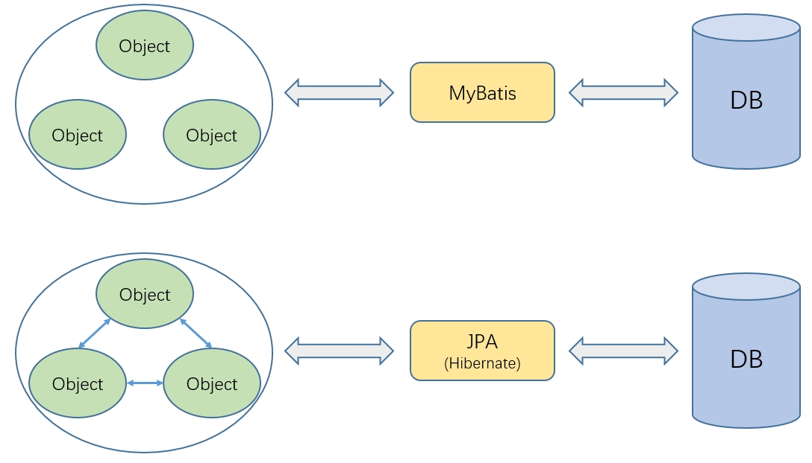
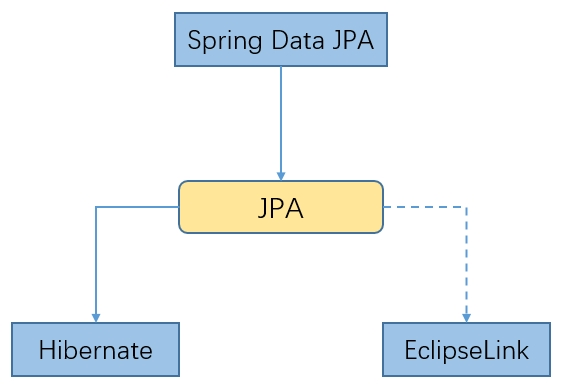

2. 介绍
2.2. Official Libraries
-
Servlet
-
JDBC
-
WebSocket Client
-
Email Client
-
Validation
-
JAX-RS(The Java API for RESTful Web Services)
-
JPA
-
javax.xxx/jakarta.xxx
2.3. JPA
JPA（Java Persistence API）是Java EE规范的一部分，它提供了一种将Java对象映射到关系数据库表的标准方法。JPA旨在简化数据持久化过程，即把内存中的对象状态保存到数据库中，以及从数据库中恢复对象状态到内存中。通过这种方式，开发者可以更加专注于业务逻辑的实现，而不是数据库操作的细节。
JPA包含了一系列的标准接口和类，这些接口和类定义了对象关系映射（ORM）的标准。开发者可以使用这些接口和类来创建实体（Entity）类，这些类代表数据库中的表，并使用注解（Annotations）或XML映射文件来定义实体与数据库表之间的映射关系。
2.4. JPA vs MyBatis
ORM（Object-Relational Mapping）框架是一种在面向对象的编程语言中使用的技术，它提供了一种将对象模型映射到关系型数据库表的方式，MyBatis只能映射孤立的对象和数据库表，而不能映射对象间的关系，也就是说只实现了OM，因此有时候会把MyBatis称为 半个ORM框架

2.5. Spring Data JPA
Spring Data JPA是Spring Data设计思想在JPA上的实现，允许开发者以一种声明式和简洁的方式来处理数据库操作，使用它能够极大地简化JPA的使用，减少模板代码，轻松构建Java EE应用

3. 示例
开发一个简单的学生管理系统，学生信息包括姓名、年龄、性别、家属，一个学生对应多个家属，家属信息包含姓名、年龄、与学生关系
3.1. 快速开始
<dependency>
<groupId>org.springframework.boot</groupId>
<artifactId>spring-boot-starter-data-jpa</artifactId>
</dependency>public class Student {
//...
public static class Family {
//...
}
}
public interface StudentRepository extends CrudRepository<Student, Long> {
}
3.3. 声明式查询方法
public interface StudentRepository extends CrudRepository<Student, Long> {
List<Student> findByNameLike(String name);
}
2024-08-05 13:35:28.639 INFO 20516 --- [ main] o.s.t.c.transaction.TransactionContext : Began transaction (1) for test context ...
Hibernate: select student0_.id as id1_0_, student0_.age as age2_0_, student0_.gender as gender3_0_, student0_.name as name4_0_ from student student0_ where student0_.name like ? escape ?
2024-08-05 13:35:28.935 INFO 20516 --- [ main] o.s.t.c.transaction.TransactionContext : Rolled back transaction for test ...